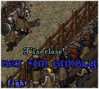
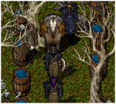
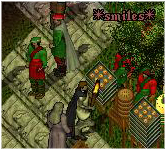
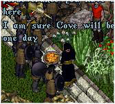
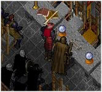
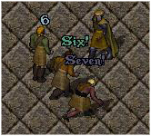

<TABLE BORDER CELLPADDING="0" background="bocimages/scrollbgdark.gif" width="100%">
	<TR>
	<!-- Header or whatever -->
	<BR>
		<TD valign="top" class="notes">
		<TABLE BORDER="0" CELLPADDING="2">
		<TR>
		  <TD valign="top" width="1%">
		    <P>
		    
		    <P>
		    
		    <P>
		    
		    <P>
		    
		    <P>
		    </TD>
		  <TD valign="top" width="99%" class="notes"><B><U>Armsmaster
		    Tournament</U></B><BR>
		    Created by Sergeant Arc, the Armsmaster Tournament is a gruelling competition
		    of weapons and tactics that takes place within Covian borders once a month.
		    With strict armour rulings, and limited resources, Covian guardsmen and other
		    able fighters battle it out to earn the title of <I>Armsmaster Champion</I>.
		    <P>
		    <B><U>Caravans/Escorts</U></B><BR>
		    Now and again the Baronship sends or collects supplies on behalf of Cove.
		    Naturally, the value of provisions lure in disreputable folk, and therefore
		    Covian guardsmen often see to the escort of the caravan.
		    <P>
		    <B><U>Patrols and Bounty Hunting</U></B><BR>
		    Whenever two or more guardsmen are together they may go on a patrol around
		    Cove, Vesper, or Minoc to locate any criminals that are wanted, and to make
		    sure that all is calm on the highway roads and in the city streets.
		    <P>
		    <B><U>Hunts</U></B><BR>
		    Hunts are held frequently by the Army, venturing to foreign lands and the
		    most treacherous of places. These Hunts vary greatly in difficulty and length.
		    The most famous Hunts have been lead by Captain Mavis, formerly of Lord
		    Hendrake's Irregulars, who's experience and knowledge of both beast and land
		    was vast.
		    <P>
		    <B><U>Diplomatic Meetings</U></B><BR>
		    These meetings shall take place whenever there is a matter to be discussed.
		    The Baron shall leave Cove with his advisor and an escort of Covian guards
		    to discuss matters ranging from simple trade to all out war.
		    <P>
		    <B><U>Council Meetings</U></B><BR>
		    When need arises, the Council members of Cove shall form together and discuss
		    many issues. They shall also be available to answer any questions Covian
		    citizens may have.
		    <P>
		    <B><U>Army Training</U></B><BR>
		    Frequent training of the Army ensures effective competence and professionalism
		    that is essential in a Covian guardsman. A regular training session will
		    include working on fitness, orders, kit, formations, and basic fighting
		    principles.
		    <P>
		  </TD>
		</TR>
	      </TABLE>
		</TD>
	</TR>
</TABLE>
